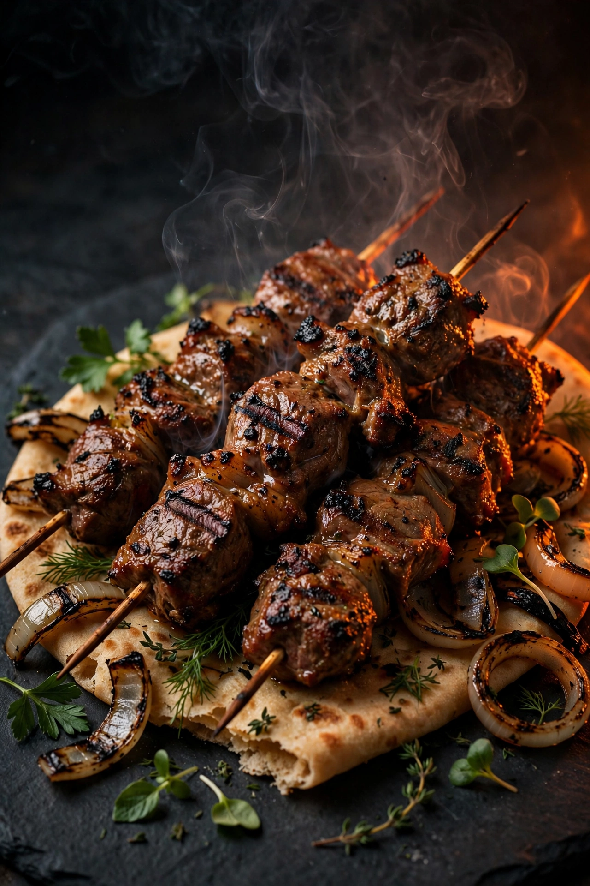
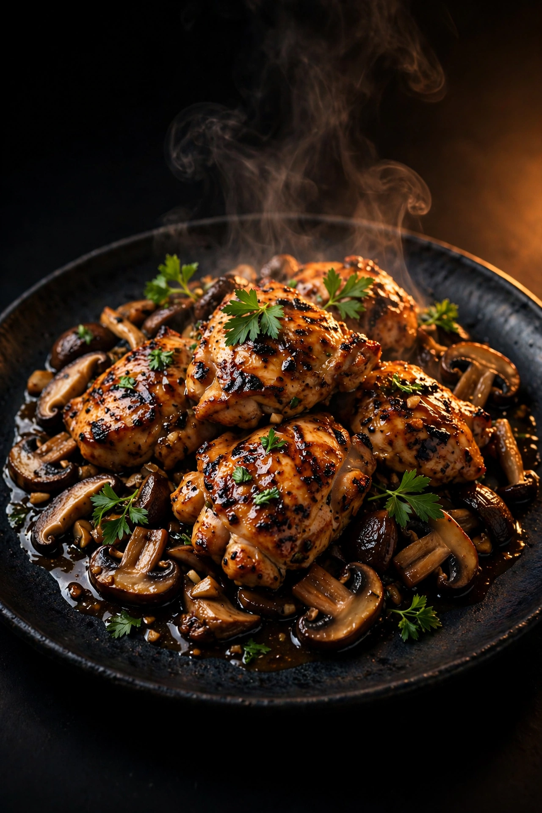
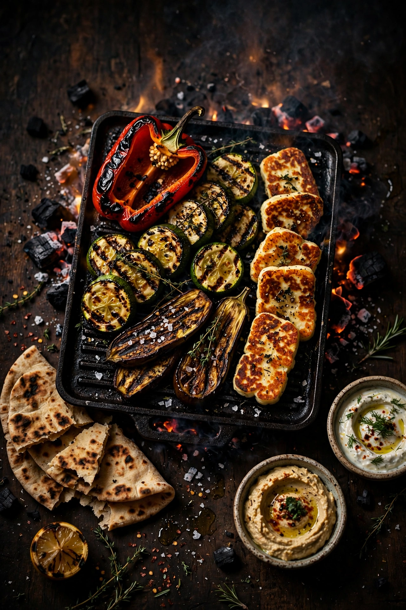
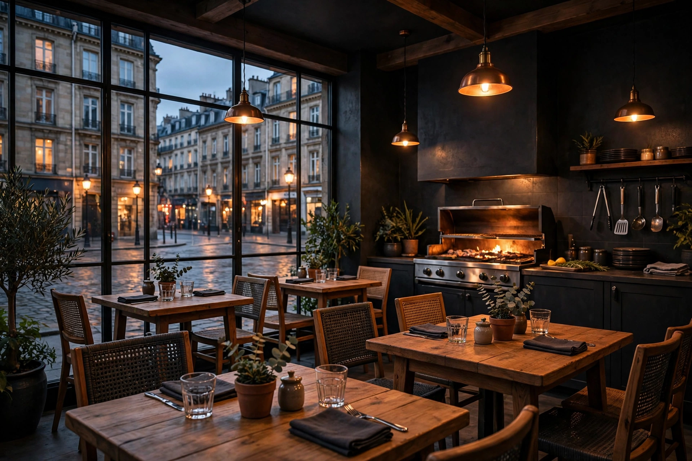

Brochettes marinées
Le cœur de la maison : des viandes marinées, grillées jusqu'à la marque du feu. Les avis les décrivent juteuses et pleines de goût.
Le goût du grill : les viandes marinées
À quelques minutes de la gare Cornavin, sur la Rue du Mont-Blanc, un grill turc comme on les aime : viandes marinées passées à la flamme, poulet, plats végétariens et desserts, sur place, en terrasse ou à emporter.
Ouvert tard : jusqu'à minuit, et jusqu'à 2h du matin le vendredi et le samedi.
Le cœur de la maison : le grill, la marinade et la flamme. Voici ce que la carte et les avis retiennent chez Sam's.

Le cœur de la maison : des viandes marinées, grillées jusqu'à la marque du feu. Les avis les décrivent juteuses et pleines de goût.

L'association que les avis sur la maison retiennent nommément : le poulet, servi avec des champignons.

La cuisine turque de la maison pense aussi aux végétariens : légumes et spécialités sans viande passent eux aussi à la flamme.
La touche sucrée pour finir le repas : les desserts font partie de ce que les avis sur la maison retiennent.
Marinées avant de passer au grill : c'est le goût fumé et la tendreté que les avis soulignent le plus.
Deux services, sept jours sur sept selon les horaires de la fiche Google : le midi comme le soir.
Deux façons de s'installer : la salle, ou les tables dehors, côté Rue du Mont-Blanc.
Tout le grill à emporter : un appel, et votre commande vous attend au comptoir.

Un grill de quartier, entre la gare et le lac.
Sam's Grill House se trouve au 16 de la Rue du Mont-Blanc, la rue qui relie la gare Cornavin au lac. C'est l'adresse que les voyageurs comme les gens du quartier croisent tous les jours.
Ici, tout tourne autour du grill : une cuisine turque simple et directe, des viandes marinées, du poulet, des options végétariennes et des desserts pour finir.
Les avis retiennent l'accueil : une équipe chaleureuse, un patron dont on loue le sens du service, et une porte ouverte même à celles et ceux qui ne parlent pas français.
410 avis Google pour cette adresse de la Rue du Mont-Blanc : une valeur sûre du quartier Cornavin.
La cuisine turque de la maison prévoit de vraies options végétariennes, du grill comme du reste de la carte.
Mangez dans la salle, dehors sur la Rue du Mont-Blanc, ou emportez votre grillade : les trois sont possibles.
Jusqu'à minuit la plupart des soirs, et jusqu'à 2h le vendredi et le samedi, selon la fiche Google.
À deux pas de Cornavin, Sam's sert au déjeuner comme au dîner, et le grill reste chaud tard le week-end.
Parcourez la carte ci-dessus et faites votre choix.
Un coup de fil, et le grill s'occupe de votre commande.
Votre commande vous attend au 16, Rue du Mont-Blanc.
La maison vit sur Instagram et TikTok : grillades, coulisses du grill et actualités de la Rue du Mont-Blanc, c'est là que ça se passe. Et sur Facebook, pour les habitués du quartier.
| Lundi à jeudi | 7h00 à 0h00 |
|---|---|
| Vendredi et samedi | 7h00 à 2h00 |
| Dimanche | 10h00 à 0h00 |
Horaires selon la fiche Google de l'établissement. Sous réserve de modification.
Sur place, en terrasse ou à emporter. Paiement par carte accepté.
Gare Cornavin, la gare centrale est à quelques minutes à pied, parfait en arrivant à Genève ou avant un train.
Arrêts proches, Mont-Blanc à 126 m, Alpes à 142 m et Chantepoulet à 175 m, selon la fiche de l'établissement.
Le lac, les quais et le Jet d'Eau sont au bout de la rue, côté lac Léman.